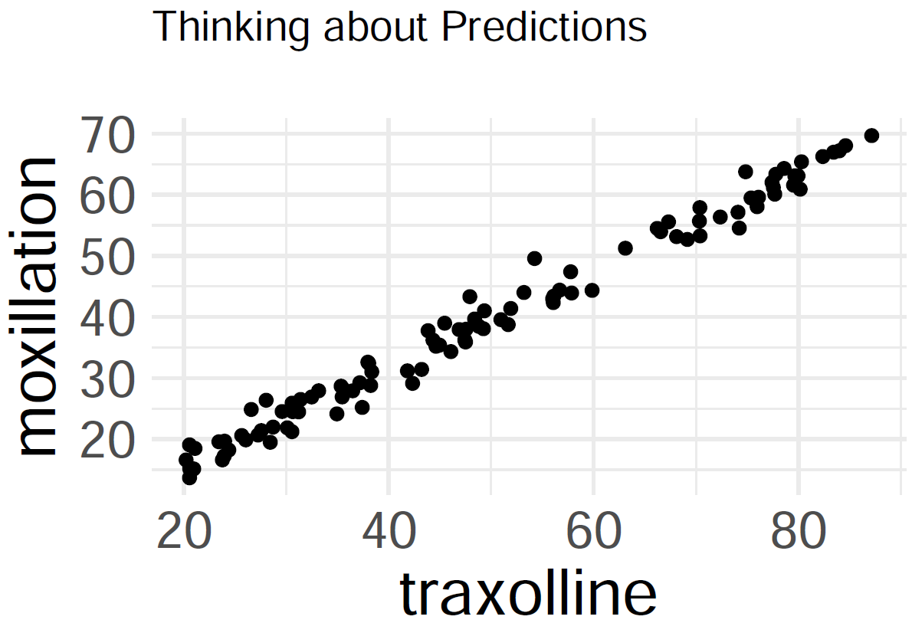
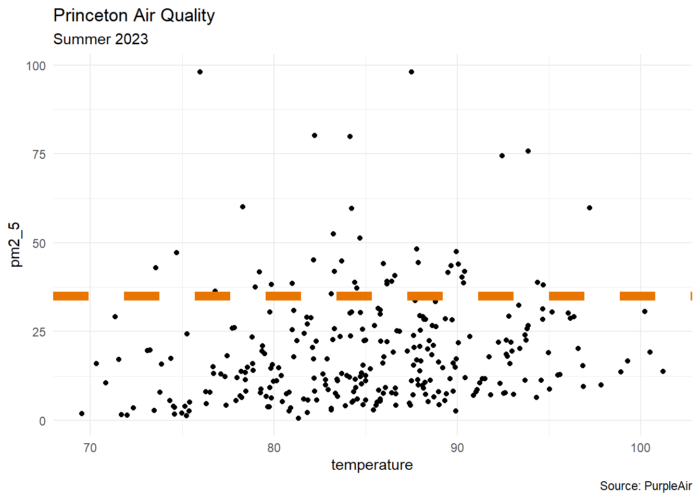
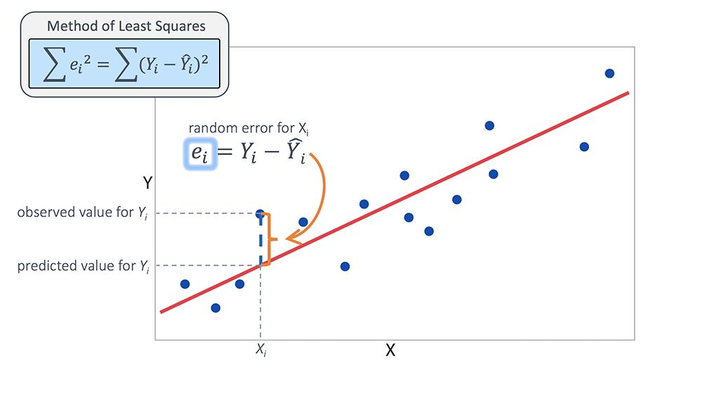
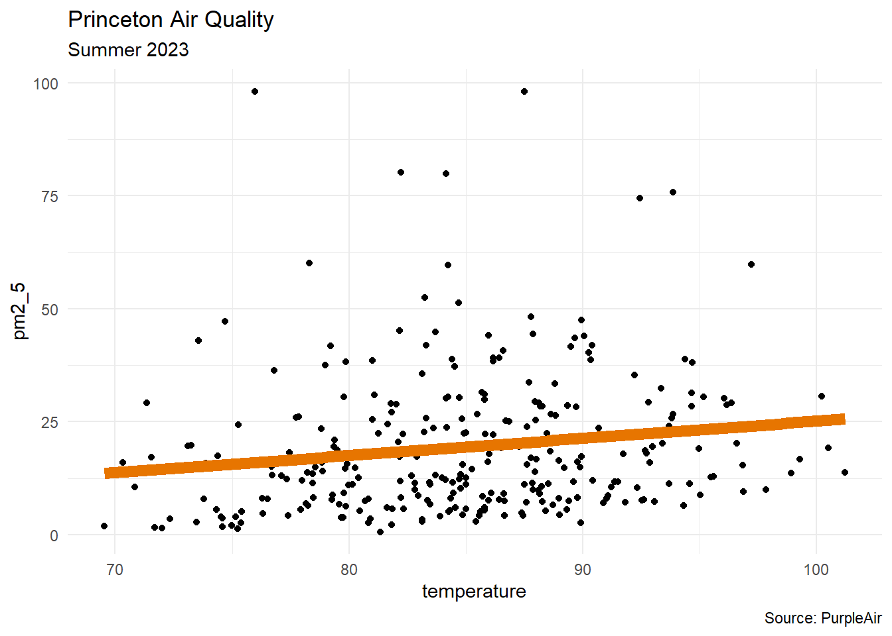
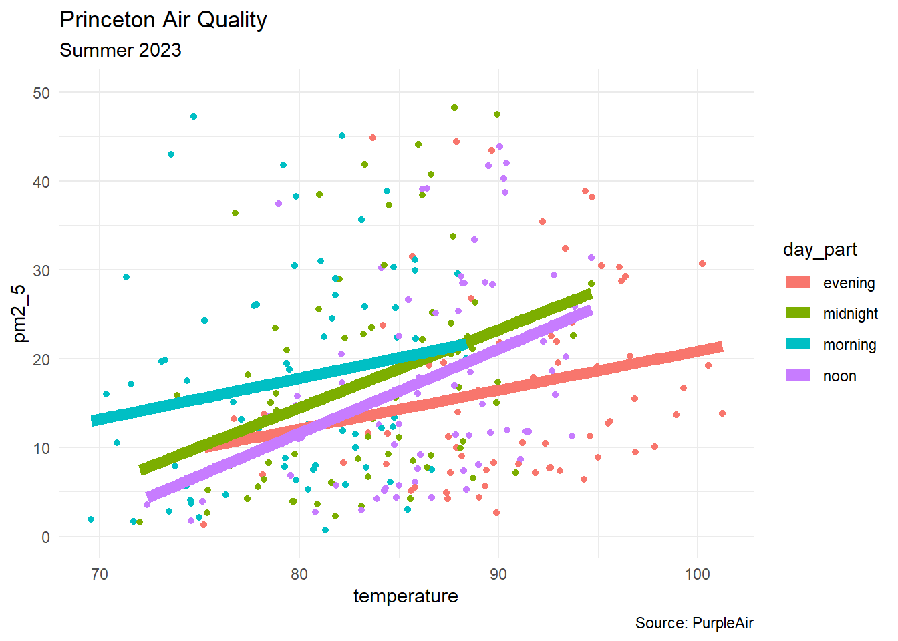

library("moderndive") #for get_regression_table()
library("tidyverse")
df_raw <- readr::read_csv("air_quality_demo_data.csv")
# brand colors
# orange on white: #e77500
# orange on black: #f58025Warm-Up
On Predictions
Predict how much moxillation takes place at 70 traxolline.

Setting
Tidyverse
Data
This data set can be seen at aqicn.org and was accessed through the PurpleAir API
head(df_raw)# A tibble: 6 × 6
time_stamp humidity temperature pressure pm1.0_atm pm2.5_atm
<dttm> <dbl> <dbl> <dbl> <dbl> <dbl>
1 2023-06-10 06:00:00 34.3 81.3 1004. 0.355 0.64
2 2023-06-10 12:00:00 30.8 85.0 1003. 8.78 12.6
3 2023-06-10 18:00:00 26.9 88.6 1003. 18.2 26.7
4 2023-06-11 00:00:00 37.0 82.0 1005. 19.2 28.9
5 2023-06-11 06:00:00 49.7 73.6 1006. 27.9 43.0
6 2023-06-11 12:00:00 33.6 89.5 1006. 27.7 41.7 - about 10 weeks of weather data, at 6-hour intervals (\(n = 291\) observations)
- query: Why do we record different types of particulate matter measurements?
Wrangling
df <- df_raw |>
separate(time_stamp, into = c("date", "time"),
remove = FALSE, sep = " ") |>
mutate(time = ifelse(is.na(time), "00:00:00", time),
day_part = case_when(
time == "06:00:00" ~ "morning",
time == "12:00:00" ~ "noon",
time == "18:00:00" ~ "evening",
.default = "midnight"
)) |>
rename(pm1_0 = pm1.0_atm, pm2_5 = pm2.5_atm) |>
select(time, day_part, humidity, temperature, pm2_5)separatethe time stamp intodateandtimecolumns- described parts of the day: morning, noon, evening, midnight
- renamed particulate matter columns for ease
head(df)# A tibble: 6 × 5
time day_part humidity temperature pm2_5
<chr> <chr> <dbl> <dbl> <dbl>
1 06:00:00 morning 34.3 81.3 0.64
2 12:00:00 noon 30.8 85.0 12.6
3 18:00:00 evening 26.9 88.6 26.7
4 00:00:00 midnight 37.0 82.0 28.9
5 06:00:00 morning 49.7 73.6 43.0
6 12:00:00 noon 33.6 89.5 41.7 Linear Regression
- response variable (\(Y\)): particulate matter (2.5 microns)
- predictor variable (\(X_{1}\)): temperature
\[Y = a + b_{1}X_{1}\]
- context: levels above 35 micrograms per cubic meter are considered unhealthy (according to the Indoor Air Hygiene Institute)

df |>
ggplot(aes(x = temperature, y = pm2_5)) +
geom_point() +
geom_hline(yintercept = 35, color = "#e77500",
linewidth = 3, linetype = 2) +
labs(title = "Princeton Air Quality",
subtitle = "Summer 2023",
caption = "Source: PurpleAir") +
theme_minimal()Where Fit?

Residuals
Goal: Given a bivariate data set \(\{x_{i}, y_{i}\}_{i=1}^{n}\), form a linear regression model
\[\hat{y} = a + bx\]
that ``best fits’’ the data. Note that such a line will not go through all of the data (except in linear, deterministic situations), so
- denote \(y_{i}\) for true outcomes
- denote \(\hat{y}_{i}\) for estimates (or predictions)
- then \(y_{i} - \hat{y}_{i}\) is the \(i^{\text{th}}\) residual

Method of Least Squares
Like our derivation of formulas for variance and standard deviation, scientists decided to square the residuals (focus on size of residuals, avoid positive versus negative signs). Let the total error be
\[E(a,b) = \displaystyle\sum_{i = 1}^{n} (y_{i} - \hat{y}_{i})^{2} = \displaystyle\sum_{i = 1}^{n} (y_{i} - a - bx_{i})^{2} \]
- The ``best-fit line’’ minimizes the error.
- To minimize the error, start by setting the partial derivatives equal to zero:
\[\displaystyle\frac{\partial E}{\partial a} = 0, \quad \displaystyle\frac{\partial E}{\partial b} = 0\] Thankfully, the function \(E(a,b)\) is an elliptical paraboloid, so there is a global minimum at the critical point, and that minimum is found where
\[a = \displaystyle\frac{ (\sum y_{i})(\sum x_{i}^{2}) - (\sum x_{i})(\sum x_{i}y_{i}) }{ n\sum x_{i}^{2} - (\sum x_{i})^{2} }, \quad b = \displaystyle\frac{ n\sum x_{i}y_{i} - (\sum x_{i})(\sum y_{i}) }{ n\sum x_{i}^{2} - (\sum x_{i})^{2} }\]
Linear Regression Model (Another View)
If sample means \(\bar{x}\) and \(\bar{y}\), sample standard deviations \(s_{x}\) and \(s_{y}\), and correlation coefficient \(r\) were previously computed, then the best-fit linear regression line \(\hat{y} = mx + b\) is computed with
\[m = \displaystyle\frac{ rs_{y} }{ s_{x} }, \quad b = \bar{y} - m\bar{x}\]
- If correlation \(r > 0\), then the slope of the regression line is also positive
- If correlation \(r < 0\), then the slope of the regression line is also negative
Outliers
In a scatterplot, an outlier is a point lying far away from the other data points. Paired sample data may include one or more influential points, which are points that strongly affect the graph of the regression line.
ggplot
The geom_smooth layer is a quick way to draw the linear regression graph in ggplot.

df |>
ggplot(aes(x = temperature, y = pm2_5)) +
geom_point() +
geom_smooth(method = "lm", color = "#e77500",
linewidth = 3, se = FALSE) +
labs(title = "Princeton Air Quality",
subtitle = "Summer 2023",
caption = "Source: PurpleAir") +
theme_minimal()Model
model1 <- lm(pm2_5 ~ temperature, data = df)model1
Call:
lm(formula = pm2_5 ~ temperature, data = df)
Coefficients:
(Intercept) temperature
-12.9066 0.3805 - Interpretation: for every one-degree increase in temperature, the PM2.5 level increases by 0.3805
Prediction
Predict the PM2.5 level for a 78-degree day.
predict(model1,
newdata = data.frame(temperature = 78)) 1
16.77266 Think about what is meant by linear regression. Draw a large area for a graph (\(x\)- and \(y\)-axes, first quadrant only, you do not have to label the axes). Come up with a scatterplot situation where performing linear regression and a subsequent prediction would be a bad idea.
Multivariate Linear Regression
response variable (\(Y\)): particulate matter (2.5 microns)
predictor variables
- \(X_{1}\): temperature
- \(X_{2}\): humidity
\[Y = a + b_{1}X_{1} + b_{2}X_{2}\]
model2 <- lm(pm2_5 ~ temperature + humidity,
data = df)Describe the regression coefficients for the two predictor variables (hint: rates of change).
moderndive::get_regression_table(model2)# A tibble: 3 × 7
term estimate std_error statistic p_value lower_ci upper_ci
<chr> <dbl> <dbl> <dbl> <dbl> <dbl> <dbl>
1 intercept -10.8 15.7 -0.684 0.495 -41.8 20.2
2 temperature 0.367 0.156 2.35 0.019 0.06 0.674
3 humidity -0.02 0.093 -0.214 0.831 -0.203 0.163Predict the PM2.5 level for a 78-degree day where the humidity is 50 percent.
predict(model2,
newdata = data.frame(temperature = 78,
humidity = 50)) 1
16.86311 Categorical Variables
response variable (\(Y\)): particulate matter (2.5 microns)
predictor variables
- \(X_{1}\): temperature
\[Y = a + b_{1}X_{1} + b_{3}X_{3} + b_{4}X_{4} + b_{5}X_{5}\]
\[X_{3} = \begin{cases} 1 & \text{morning} \\ 0 & \text{otherwise} \end{cases}\]
\[X_{4} = \begin{cases} 1 & \text{afternoon} \\ 0 & \text{otherwise} \end{cases}\]
\[X_{5} = \begin{cases} 1 & \text{evening} \\ 0 & \text{otherwise} \end{cases}\]
model3 <- lm(pm2_5 ~ temperature + day_part,
data = df)moderndive::get_regression_table(model3)# A tibble: 5 × 7
term estimate std_error statistic p_value lower_ci upper_ci
<chr> <dbl> <dbl> <dbl> <dbl> <dbl> <dbl>
1 intercept -42.8 16.8 -2.54 0.012 -76.0 -9.68
2 temperature 0.68 0.184 3.69 0 0.317 1.04
3 day_part: midnight 5.06 2.89 1.75 0.081 -0.628 10.7
4 day_part: morning 8.48 3.29 2.57 0.011 2.00 15.0
5 day_part: noon 4.19 2.68 1.56 0.12 -1.10 9.47- Predict the PM2.5 level for a 60-degree morning.
- Predict the PM2.5 level for a 75-degree evening.
\[Y = -42.844 + 0.680X_{1} + 5.056X_{3} + 8.477X_{4} + 4.186X_{5}\]
\[X_{3} = \begin{cases} 1 & \text{morning} \\ 0 & \text{otherwise} \end{cases}\]
\[X_{4} = \begin{cases} 1 & \text{afternoon} \\ 0 & \text{otherwise} \end{cases}\]
\[X_{5} = \begin{cases} 1 & \text{evening} \\ 0 & \text{otherwise} \end{cases}\]

df |>
group_by(day_part) |>
ggplot(aes(x = temperature, y = pm2_5,
color = day_part, group = day_part)) +
geom_point() +
geom_smooth(aes(color = day_part), method = "lm",
linewidth = 3, se = FALSE) +
labs(title = "Princeton Air Quality",
subtitle = "Summer 2023",
caption = "Source: PurpleAir") +
theme_minimal() +
ylim(0,50)predict(model3,
newdata = data.frame(temperature = 60,
day_part = "morning")) 1
6.448983 predict(model3,
newdata = data.frame(temperature = 75,
day_part = "evening")) 1
8.176292